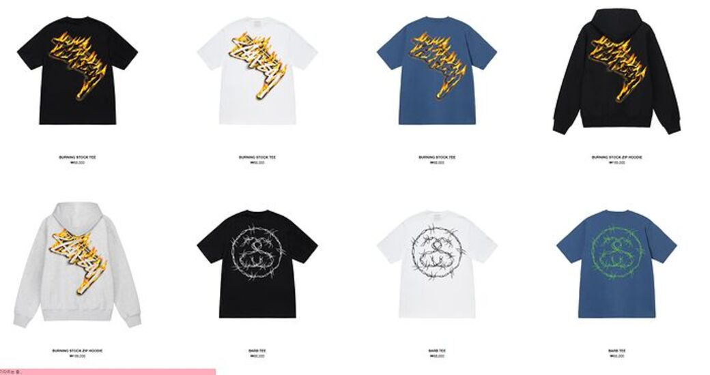

STUSSY
스투시는 1980년 SHAWN STUSSY 라는 서프보드에 열광하는 CREW가 만든 브랜드다. 스투시의 특유의 로고는 SHAWN STUSSY의 삼촌이 만든 로고로 지금은 스트릿웨어에서 빼놓을수 없는 브랜드로 자리 잡았지만 스투시의 시초는 캘리포니아에서 그가 티셔츠와 서프보드를 만들면서 시작된 작은 브랜드 였다. 스투시의 성공요인은 언제나 열린마인드로 도쿄와 런던 뉴욕의 보더, DJ등과 교류를 하며 그들의 문화를 콘셉트으로 잡고 1970~80년대 영국 펑크의 DIY정신까지 받아들여 현재까지 독립적이며 모든 스트릿 문화를 좋아하는 사람들이 동경하는 브랜드로 자리 잡았다.
위에 사진은 2023 S/S시즌 스투시와 데님으로 유명한 리바이스와 콜라보한 제품이다.